Beyond Dents and Scratches: Logical Constraints in Unsupervised Anomaly Detection and Localization
Paul Bergmann1,2 · Kilian Batzner1 · Michael Fauser1 · David Sattlegger1 · Carsten Steger1
Received: 23 March 2021 / Accepted: 20 January 2022 / Published online: 22 February 2022
© The Author(s) 2022
Abstract
The unsupervised detection and localization of anomalies in natural images is an intriguing and challenging problem. Anomalies manifest themselves in very different ways and an ideal benchmark dataset for this task should contain representative examples for all of them. We find that existing datasets are biased towards local structural anomalies such as scratches, dents, or contaminations. In particular, they lack anomalies in the form of violations of logical constraints, e.g., permissible objects occurring in invalid locations. We contribute a new dataset based on industrial inspection scenarios that evenly covers both types of anomalies. We provide pixel-precise ground truth data for each anomalous region and define a generalized evaluation metric that addresses localization ambiguities that can arise for logical anomalies. Furthermore, we propose a novel algorithm that improves over the state of the art in the joint detection of structural and logical anomalies. It consists of a local and a global network branch. The first one inspects confined regions independent of their spatial locations in the input image and is primarily responsible for the detection of entirely new local structures. The second one learns a globally consistent representation of the training data through a bottleneck that enables the detection of violations of long-range dependencies, a key characteristic of many logical anomalies. We perform extensive evaluations on our new dataset to corroborate our claims.
Keywords Anomaly detection Novelty detection Datasets Unsupervised learning Defect segmentation Performance metrics
1 Introduction
The abundance and availability of unlabeled image data both enables and encourages the development of unsupervised methods in many areas of computer vision. In this paper, we address the problem of detecting and localizing anomalous regions in natural images without any prior knowledge of the nature and appearance of potential anomalies.
This problem has attracted increased attention from the research community and has applications in numerous fields, including active learning (Mackowiak et al. 2018; Yoo and Kweon 2019), medical imaging (Baur et al. 2019; Zhou et al. 2020; Schlegl et al. 2019), autonomous driving (Blum et al. 2019; Lis et al. 2019), and industrial inspection (Bergmann et al. 2021, 2019b; Cohen and Hoshen 2020).
The present work builds on the observation that deviations from the anomaly-free training data can manifest themselves in very different ways. On the one hand, entirely new local structures can occur that are not present during training. On the other hand, an image can also be considered anomalous if certain underlying logical or geometrical constraints of the training data are violated. To illustrate the difference between these two, we created a synthetic toy dataset. All anomaly-free images display exactly one black circle at a random location on a flat white background. We introduced two different types of anomalies. The first one is a simple color variation. The second type of anomaly is characterized by the fact that there are two black circles in a single image instead of one. Detailed information on the creation of the toy dataset is found in Appendix 1.
A number ofexisting state-of-the-art unsupervised anomaly detection methods model the distribution of local features extracted from pretrained networks (Bergmann et al. 2020; Burlina et al. 2019). They excel at the detection of anomalies such as the color defect in our toy dataset. They are, however, inherently limited to the information inside the receptive field of their descriptors. This makes it difficult to detect anomalies that violate long-range dependencies. In Fig. 1, we demonstrate this by considering three test images of our toy dataset, one of which is anomaly-free, one shows a color defect, and one contains an additional circle. The center row shows anomaly maps calculated by the Student–Teacher method (Bergmann et al. 2020). This method clearly identifies and localizes the color defect. The two circles, however, are not predicted as anomalous because each individual circle does not constitute an anomaly and the receptive field of the method is not large enough to understand the long-range relationships in the image.
Autoencoders (VAEs) (An and Cho 2015; Vasilev et al. 2019) or Generative Adversarial Networks (GANs) (Goodfellow et al. 2014; Schlegl et al. 2017) have the potential to capture information from the entire image (Liu et al. 2020). Consequently, they are potentially able to detect anomalies such as the extra black circle in our toy dataset. However, they also tend to produce blurry and inaccurate reconstructions, which leads to an increase in false positives, and are often outperformed by the local methods mentioned above. The bottom row of Fig. 1 shows anomaly maps calculated by a VAE on our toy dataset. This method accomplishes to identify the two circles as anomalous but produces many false positives in the anomaly-free test image.
Motivated by these observations, we classify an anomaly as either a structural anomaly or a logical anomaly and demonstrate that existing methods indeed perform very differently on these two classes. We define structural anomalies as new visual structures that occur in locally confined regions and that do not exist in the anomaly-free data. Logical anomalies, on the other hand, violate underlying logical constraints in the data and potentially require a method to capture longrange dependencies. In our toy example, we would classify the color defect as a structural anomaly since the yellow color adds a local structure that has never been observed during training. The additional circle in the top right corner of Fig. 1 does not introduce any new local structure. The anomaly manifests itself through the violation of the logical constraint that there should always be exactly one circle in the image. Hence, we classify it as a logical anomaly. Note that it is not always straightforward to make a clear distinction between structural and logical anomalies and corner cases may exist.
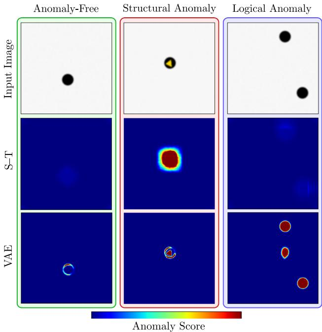
Fig. 1 Qualitative results of the Student–Teacher (S–T) method and a variational autoencoder (VAE) on a simple toy dataset. Anomaly maps are shown for an anomaly-free image, an image containing a structural anomaly (a color defect), and a logical anomaly (two circles being present instead of one). S–T inspects local image regions and therefore only detects the color defect. The VAE captures the global context of images in its bottleneck. It finds both anomalies, but also produces many false positives due to its inaccurate reconstructions
Existing datasets (Bergmann et al. 2021; Carrera et al. 2017; Huang et al. 2018; Song and Yan 2013) identify the task of visual inspection of industrially manufactured products as a typical real-world example for unsupervised anomaly detection. Nevertheless, all of them focus on the detection of structural anomalies and therefore favor methods that perform well on this type of anomaly. Logical anomalies, however, do occur in manufacturing processes, e.g., as an incorrect wiring of a circuit, a shift in the fill level of a vial, or the absence of an essential component. The development of methods that are capable of detecting logical anomalies is hindered by the availability of suitable data. This creates the need for a dataset that takes both structural and logical anomalies into account with equal importance. We intend to alleviate this need by introducing a new dataset that is also inspired by industrial inspection scenarios but balances the number of logical and structural anomalies. An illustrative example is portrayed in Fig. 2.
This new dataset has enabled us to develop a new method that is capable of detecting both types of anomalies. In summary, we make three key contributions:
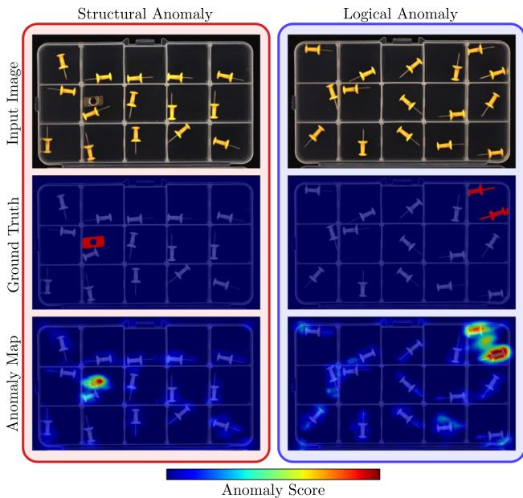
Fig. 2 Difference between structural (left) and logical anomalies (right). While the former introduce novel local structures (i.e., the metal piece on the left), the latter violate logical constraints of the training data (i.e., the additional pushpin in the top right compartment). Our proposed method successfully localizes the anomaly in both images
We introduce a new dataset for the evaluation of unsupervised anomaly localization algorithms that covers both structural and logical anomalies. It contains 3644 images of five distinct object categories inspired by realworld industrial inspection scenarios. Structural anomalies occur as scratches, dents, or contaminations in the manufactured products. Logical anomalies violate underlying constraints, e.g., a permissible object being present in an invalid location or a required object not being present at all. We hope that this dataset will help the research community to develop and test their own algorithms in the future.
In order to compare the performance of different methods on our dataset, a suitable performance measure is needed. We find that commonly used metrics are not directly applicable to assess the capability of methods to detect logical anomalies. To this end, we introduce a performance metric that takes the different modalities of the defects present in our dataset into account. This performance measure is a generalization of an established measure for unsupervised anomaly detection.
We propose a new method for the unsupervised pixelprecise localization of anomalies. It improves the results of the joint detection of structural and logical anomalies compared to existing methods. Our method consists of a local and a global branch, each of which we show to be primarily responsible for the detection of structural and logical anomalies, respectively. Motivated by the recent success of using local features of pretrained networks for anomaly detection, our local branch contains a regression network that matches such local descriptors. The global branch of our method intends to overcome the difficulty to capture the entire context of an input image by learning a globally consistent representation of the training data through a bottleneck. During inference, regression errors in the two branches indicate anomalies. Extensive evaluations against state-of-the-art methods show the superiority of our approach in the detection of logical anomalies, as well as in the combined localization of both anomaly types.
2 Related Work
We first discuss existing datasets for unsupervised anomaly localization and show the need for our newly introduced dataset. We then give an overview of relevant approaches to unsupervised anomaly localization. Pang et al. (2020) provide a more comprehensive review of both subjects.
2.1 Datasets
The availability of challenging datasets such as ImageNet (Krizhevsky et al. 2012), MS-COCO (Lin et al. 2014), or Cityscapes (Cordts et al. 2016) has largely contributed to recent successes in various fields of computer vision. For the task of unsupervised anomaly localization, however, comparatively few datasets exist and all of them are primarily designed for the detection of what we refer to as structural anomalies.
Huang et al. (2018) introduce a surface inspection dataset of magnetic tiles. It contains 1344 grayscale images of a single texture. Test images contain various structural anomalies such as cracks or uneven areas. Similarly, Carrera et al. (2017) present NanoTWICE, a dataset of 45 grayscale images of a nanofibrous material acquired by a scanning electron microscope. Anomalies occur in the form of flattened areas or specks of dust. Both datasets only provide textured images, which require a method to focus on local repetitive patterns. Hence, these datasets are inherently unsuited for assessing the ability of a method to capture long-range dependencies and logical constraints.
The Fishyscapes dataset (Blum et al. 2019) is intended to assess the anomaly detection performance of semantic segmentation algorithms for autonomous driving. The task is to train a supervised model on the Cityscapes dataset and, during inference, to localize anomalous objects that were inserted artificially into the test images. The anomalies only consist of objects not present in the training set. This enables their detection based on local, patch-based visual features.
The MVTec Anomaly Detection dataset (MVTec AD) comprises five texture and ten object categories from industrial inspection scenarios (Bergmann et al. 2021). The 1258 test images contain 73 types of anomalies, such as contaminations or scratches on the manufactured products. The vast majority (97%) of anomalies in the dataset matches our definition of structural anomalies. Hence, an evaluation on this dataset alone does not give sufficient insight into how well a method detects logical anomalies.
To date, there exists no comprehensive dataset that explicitly focuses on the detection of structural as well as logical anomalies and that requires a model to understand the underlying logical or geometrical relationships in the anomaly-free data. To fill this void, we introduce the Logical Constraints Anomaly Detection dataset. It represents industrial inspection scenarios and equally covers both types of anomalies.
2.2 Methods
The diversity ofmethods for unsupervised anomaly detection and localization is high. Numerous approaches have been introduced to tackle the problem. Ehret et al. (2019) give a comprehensive review of existing work. Here, we restrict ourselves to a brief overview of methods. We only cover methods that are capable of performing a pixel-precise localization of anomalies in natural images.
Autoencoder-based methods attempt to reconstruct input images through a low-dimensional bottleneck. They rely on the assumption that anomalies cannot be reconstructed during inference. Pixelwise anomaly scores are derived by comparing the input to the reconstruction. While their latent representations have the potential to capture the global context of the training data, autoencoders tend to produce blurry and inaccurate reconstructions. This leads to an increase in false positives. They might also learn to simply copy parts of the input data, which would allow them to reconstruct anomalous features during inference. To discourage this behavior, Park et al. (2020) introduce MNAD, an autoencoder with an integrated memory module. It selects numerous latent features during training that need to be reused for reconstruction during inference. In our experiments, we observed that this indeed helps in the detection of structural anomalies but impairs the detection of logical ones (see Fig. 8).
Similar to autoencoders, GAN-based methods attempt to reconstruct anomaly-free images by finding suitable latent representations as input for the generator network. Schlegl et al. (2019) propose f-AnoGAN, for which an encoder network is trained to output the latent vectors that best reconstruct the training data. A pixelwise comparison of the input image and the reconstruction yields an anomaly score. Since GANbased methods are difficult to train on high-resolution images (Gulrajani et al. 2017), f-AnoGAN processes images at a resolution of pixels, which results in very coarse anomaly maps.
Methods that leverage features of pretrained networks tend to outperform autoencoder- or GAN-based methods that are trained from scratch (Burlina et al. 2019). They achieve this by modeling the distribution of local features obtained from spatially resolved activation layers of a pretrained network. Cohen and Hoshen (2020) introduce the SPADE method which utilizes the feature space of a deep CNN. During inference, the method first identifies a certain number of anomaly-free training images that are closest to the test image. A separate 1-NN classifier is then introduced for each pixel in the feature maps extracted from the selected training images. This makes the algorithm computationally expensive, which might prevent it from being used in practical applications.
Bergmann et al. (2020) propose a Student–Teacher framework in which an ensemble ofstudent networks matches local descriptors of pretrained teacher networks on anomaly-free data. Anomalies are detected by increased regression errors and predictive variances in the students’ predictions. The networks employed exhibit a limited receptive field, which prevents this method from detecting global inconsistencies that fall outside the receptive field’s range.
3 The Logical Constraints Anomaly Detection Dataset
To be able to compare the ability of anomaly detection methods to understand logical constraints, we need suitable datasets. As discussed in Sect. 2.1, very few datasets exist for unsupervised anomaly detection in general. Industrial inspection scenarios have been identified as a prime example for unsupervised anomaly detection tasks. This is underlined by the fact that the majority of the existing datasets (Bergmann et al. 2019a, b; Carrera et al. 2017; Huang et al. 2018; Song and Yan 2013) are inspired by such applications.
None of them, however, set an explicit focus on the joint detection of structural and logical anomalies. To this end, we introduce the MVTec Logical Costraints Anomaly Detection (MVTec LOCO AD) dataset.1
3.1 Description of the Dataset
MVTec LOCO AD consists of five object categories from industrial inspection scenarios. We have selected the objects and designed our acquisition setup in such a way that they are as close as possible to real-world applications. In machine vision applications, an object is usually located in a defined position. This is often realized by a mechanical alignment system. The illumination is chosen to best suit the task or is specifically designed for it. The same is true for the employed camera and lens. For more details on typical machine vision setups, we refer to Steger et al. (2018).
We provide a total of 1772 images for training, 304 for validation, and 1568 for testing. Figure 3 shows example images for each of the dataset categories. The training sets consists of only anomaly-free images. Machine learning methods typically require data for validating their performance during training or for adjusting hyperparameters. To ensure that the choice ofthe validation data does not add a bias to evaluations and benchmarks, we define a specific validation set. Like the training images, the validation images are free of any anomalies. The test set contains anomaly-free images and images with various types of logical and structural anomalies. All three sets are independent of each other in the sense that they consist of images of distinct physical objects and that there is no overlap between them. An overview of the image statistics of our dataset is shown in Table 1, including the number and size of training, validation, and test images as well as the number of different defect types for each category.
Each dataset category possesses certain logical constraints. Anomaly-free images of the category breakfast box always contain exactly two tangerines and one nectarine that are always located on the left-hand side of the box. Furthermore, the ratio and relative position of the cereals and the mix of banana chips and almonds on the right-hand side are fixed. A screw bag contains exactly two washers, two nuts, one long screw, and one short screw. Each compartment of the box of pushpins contains exactly one pushpin. Exactly two splicing connectors with the same number of cable clamps are linked by exactly one cable. In addition, the number of clamps has a one-to-one correspondence to the color of the cable and the cable has to terminate in the same relative position on its two ends such that the whole construction exhibits a mirror symmetry. Eachjuice bottle is filled with one of three differently colored liquids and carries exactly two labels. The first label is attached to the center of the bottle and displays an icon that determines the type of liquid. The second is attached to the lower part of the bottle with the text “100% Juice” written on it. The fill level is the same for each bottle. Violations to any of these constraints constitute logical anomalies.
The third row of Fig. 3 shows examples of logical defects, which manifest themselves in the following ways. The breakfast box contains too many banana chips and almonds. The screw bag contains two long screws and lacks a short one. One compartment ofthe box ofpushpins does not contain any pushpin. For the splicing connectors, we show three different types of defects. On the left, the two splicing connectors do not have the same number of clamps, in the center, the color of the cable does not match the number of clamps and, on the right, the cable terminates in different positions. We also present three different types of defects for the juice bottle. On the left, the icon does not match the type of juice. In the middle, the icon is slightly misplaced. Finally, on the right the fill level of the bottle is too high.
The center row of Fig. 3 depicts examples of structural anomalies. They manifest themselves as a damaged tangerine, a broken screw, a bent pushpin, a corrupt insulation of a cable, and a contamination inside a juice bottle.
3.2 Annotations and Labeling Policies
For all anomalies present in the dataset, we provide pixelprecise ground-truth annotations.
Structural anomalies are typically straightforward to annotate. Each pixel of an anomalous image that introduces a local visual structure that is not present in the anomalyfree images is marked as anomalous. In the example of the damaged tangerine in Fig. 3, all pixels that fall into the damaged region are annotated. Labeling logical defects, however, proves to be a challenging task. As an example, Fig. 3 depicts a pushpin missing in one of the compartments. Consider two methods, one that marks the whole compartment as anomalous, while the other one only marks a region with the size and shape of a pushpin inside the compartment. In this case, one would probably consider both methods as equally successful.
Our labeling policy and the newly introduced evaluation metric take such ambiguities into account. In our dataset, the union of all areas of the image that could potentially be the cause for the anomaly is labeled as anomalous. To achieve a perfect score, however, a method is not necessarily required to predict the whole ground truth area as anomalous. To reflect this, we introduce a suitable performance metric.
It is a generalization to the per-region overlap (PRO), an established metric for evaluating anomaly localization algorithms (Bergmann et al. 2021; Cohen and Hoshen 2020; Napoletano et al. 2018). To calculate the per-region overlap, real-valued anomaly scores are thresholded to obtain a binary prediction for each pixel in the test set. Then, the percentage of correctly predicted pixels is computed for each annotated defect region in the ground-truth. The average over all defects yields the final PRO value. Note that PRO is very similar to computing the average true positive rate (TPR) over all pixels. The advantage of PRO is that it weights defect regions of different size as equally important.
In our dataset, we do not necessarily require a method to segment all pixels of an annotated area. Continuing the example of the missing pushpin, it is sufficient for a method to segment an area the size of one pushpin within the empty compartment. To meet this requirement, we propose a generalized version of the PRO metric that saturates once the overlap with the ground truth exceeds a certain saturation threshold.
Table 1 Statistical overview of the MVTec LOCO AD dataset. For each category, the number of training, validation, and test images is given
| Category | # Training images | # Validation images | # Test images (anomaly-free) | # Test images (structural) | # Test images (logical) | # Defect types | Image width | Image height |
| Breakfast Box | 351 | 62 | 102 | 90 | 83 | 22 | 1600 | 1280 |
| Screw Bag | 360 | 60 | 122 | 82 | 137 | 20 | 1600 | 1100 |
| Pushpins | 372 | 69 | 138 | 81 | 91 | 8 | 1700 | 1000 |
| Splicing Connectors 354 | 59 | 119 | 85 | 108 | 21 | 1700 | 850 | |
| Juice Bottle | 335 | 54 | 94 | 94 | 142 | 18 | 800 | 1600 |
| Total | 1772 | 304 | 575 | 432 | 561 | 89 | 一 | 一 |
Test images are split into anomaly-free images and images that contain structural or logical anomalies. Additionally, the number of different defect types and the image size is reported for each category
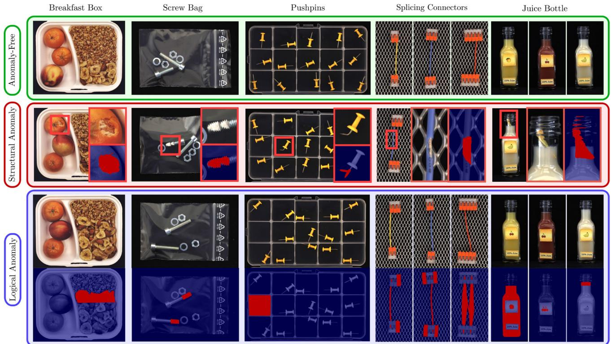
Fig. 3 Example images of the MVTec LOCO AD dataset for each of the five dataset categories. Each category contains anomaly-free train, validation, and test images. Additional test images contain various structural and logical anomalies. Pixel-precise ground truth annotations are provided for all anomalies
3.3 The Saturated Per-Region Overlap (sPRO)
Let be the set of all defect ground truth regions and be a set of corresponding saturation thresholds such that for all . For a set P of pixels in the dataset that are predicted as anomalous, we define the saturated per-region overlap (sPRO) as
Note that this is indeed a generalization of the PRO metric because if for all . An illustrative example of the sPRO metric with a single ground-truth region is shown in Fig. 4. Here, one pushpin is missing in one of the box compartments. The annotated area A comprises the entire compartment while the saturation threshold s is set to the predetermined size of a single pushpin, which is much smaller than . Hence, all predictions P for which the overlap with A exceeds s fully solve the segmentation task,
Similar to the TPR and PRO, sPRO does not take false positive predictions into account. Hence, we report its value together with the associated false positive rate (FPR). False positive predictions are defined as all pixels that are predicted as anomalous but are not covered by any annotated region. To obtain evaluation results that are independent of the binarization value used to turn real-valued anomaly scores into binary predictions, we make use of the sPRO curve. It is created analogously to the common ROC curve by computing the sPRO value for various binarization thresholds and plotting them against the corresponding FPR value. As our main performance measure, we compute the area under the sPRO curve up to a limited false positive rate and normalize it to obtain a score between 0 and 1. This is motivated by the fact that anomaly segmentation results at large false positive rates are no longer meaningful. They should, therefore, be excluded from the computation of a performance measure such as the area under the sPRO curve.
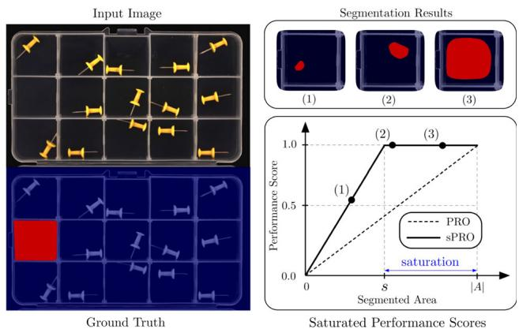
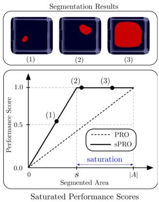
Fig. 4 Schematic illustration of the introduced sPRO evaluation metric. For an annotated anomaly A, a saturation threshold s is selected. Once the overlap of the predicted region with the ground truth A exceeds s, we consider the anomaly segmentation task solved
3.4 Selection of Saturation Thresholds
We selected suitable saturation thresholds for each of the 89 individual defect types that occur in our dataset. They are listed in Appendix D. The following paragraphs provide further details on our labeling process and the selection of saturation thresholds for various types of anomalies.
Structural anomalies. For structural anomalies, the entire annotated area should be segmented. We therefore set , which yields the original PRO metric. An example is the broken screw in the second row of Fig. 3, for which the entire broken area should be segmented as anomalous.
Missing objects. For missing objects, we annotated the entire area in which the object could potentially occur. The corresponding saturation threshold is chosen to be equal to the area of the missing object. We determined the distribution of the area of an object in our dataset by manually annotating numerous instances of the same object. We then selected a value for s from the lower end of this distribution. In the bottom row of Fig. 3, a pushpin is missing in one of the compartments. Since pushpins can potentially occur at every location in the compartment, its entire area is annotated. The corresponding saturation threshold is set to the size ofa single pushpin.
Additional objects. Some test images contain too many instances ofan object. In such cases, all instances ofthe object are annotated. The saturation threshold is set to the area of the extraneous objects. An example is shown in the second row of Fig. 10, where an additional cable is present between the two splicing connectors. Since it is not clear which of the two cables represents the anomaly, we annotate both of them. The corresponding saturation threshold is set to the area of one cable, i.e., half of the annotated region. On the one hand, this allows a method to obtain a perfect score even if it only marks one of the two cables as an anomaly. On the other hand, a method which marks both of them is not penalized.
Violation of other logical constraints. Besides the presence of additional or the absence of required objects, our MVTec LOCO AD dataset contains various test images that violate a different form of logical constraints. One example is shown in the last row of Fig. 3, where the juice bottle filled with orange juice carries the label of the cherry juice. Both the orange juice and the label with the cherry are present in the training set. The logical anomaly arises due to the erroneous combination of the two in the same image. One could either mark the area filled with juice or the cherry as anomalous. Hence, our annotation is given by the union of the two regions. Since the segmentation of the cherry within the image is sufficient to solve the anomaly localization task, s is selected as the area of the cherry.
4 Description of Our Method
In addition to the MVTec LOCO AD dataset, we introduce GCAD (Global Context Anomaly Detection), a new method for the unsupervised localization of anomalies that improves the joint detection of structural and logical anomalies compared to existing methods.
Given a training dataset of anomaly-free images, our goal is to localize anomalies in test images by assigning a real-valued anomaly score to each image pixel. All images are of width w, height h, and possess the same number of channels n. Our method consists of two main branches, one of which is primarily responsible for the localization of structural anomalies and the other one for the localization of logical anomalies. The following paragraphs give details about the two branches and highlight the characteristics that enable them to detect the two different anomaly types. A schematic overview of our approach is given in Fig. 5.
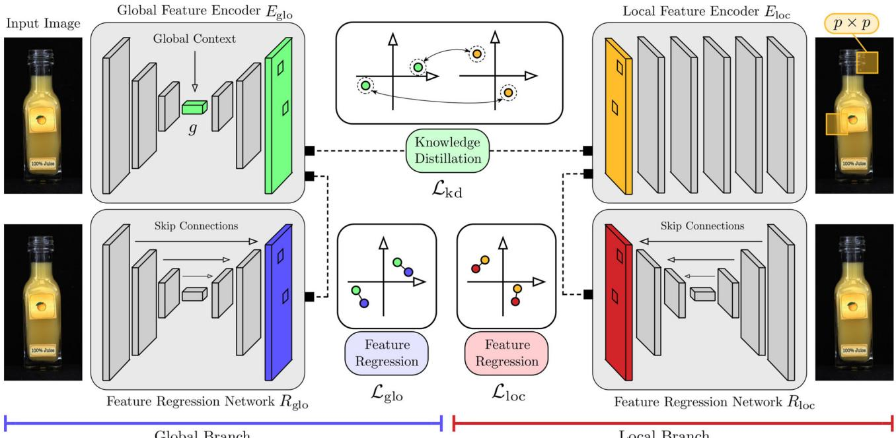
Fig. 5 Schematic overview of our approach. A global feature encoder is trained against descriptors from a pretrained local feature encoder through a bottleneck to capture the global context of the anomaly-free training data. Each encoder is assigned a high-capacity
regression network and respectively, that matches the output of its respective feature encoder. The joint training of and facilitates the accurate matching ofhigher-dimensional features through a low-dimensional bottleneck
Local Model Branch. Our first branch is motivated by the recent success of anomaly segmentation methods that model the distribution of local features extracted from pretrained CNNs. Such methods achieve state-of-the-art performance on established anomaly localization benchmarks, in which the majority of anomalies match our definition of structural anomalies. In particular, we base this branch of our model on the Student–Teacher method. Since this method computes anomaly scores for locally confined image regions independent of their spatial position in the input image, we refer to this branch as the local branch of our model.
It consists of an encoder network which is pretrained on a large number of image patches cropped from the ImageNet dataset. During pretraining, is encouraged to extract expressive descriptors for local image patches via knowledge distillation from a pretrained classification network. We distill the knowledge of a ResNet-18 (He et al. 2016) classifier trained on ImageNet into a dense patch descriptor network via fast dense feature extraction (Bailer et al. 2017). A detailed description of the network architecture of and the pretraining protocol on ImageNet can be found in the original Student–Teacher paper. After pretraining, the weights of remain fixed when optimizing our anomaly detection model. Formally, produces a descriptor of dimension at each pixel location, i.e., . Each feature describes a local patch of size within the original input image. This is achieved by choosing an architecture for with a limited receptive field.
The local branch additionally contains a regression network that is initialized with random weights and is trained to match the output of on the anomaly-free training data. It outputs a feature map of a shape identical to the one produced by , i.e., . We use a high-capacity network with skip connections for this task and minimize the squared Frobenius norm
If, during inference, an image contains novel local structures that have not been observed during training and that fall within the receptive field of the pretrained feature extractor, will produce novel local descriptors with which is unfamiliar. This leads to large regression errors. Hence, we expect the local branch of our model to perform well in the detection of structural anomalies.
Global Model Branch. inspects only a limited receptive field of size pixels and, in particular, does not encode the positional composition of the extracted training features. Hence, our local branch is inherently ill-suited for the detection of anomalies that violate long-range dependencies, which is characteristic for many logical anomalies such as missing or additional objects in the input image. To compensate for this, we add a second branch to our model that analyzes the global context of the entire input image. Therefore, we refer to this branch as the global branch of our model. Its design is inspired by the observation in Fig. 1 that methods that compress the input data to a low-dimensional bottleneck possess the ability to capture logical constraints and fail to reproduce input images that violate them.
Our global branch consists oftwo networks, and The first is an encoder network that produces a descriptor of dimension at each pixel location, Similar to an autoencoder, is encouraged to produce feature maps that are globally consistent with the training data. To this end, produces its encoding over a low-dimensional bottleneck of dimension . Contrary to autoencoders, does not reconstruct the input image. It is trained by distilling the knowledge of the local feature encoder into the global branch. In order to let the descriptors of match the output dimension of , we introduce an upsampling network U that performs a series of convolutions. For training, we minimize
In principle, anomaly scores could be computed by comparing the features of directly to those of . However, our ablation studies show that the high-dimensional and detailed feature maps of can only be approximately reproduced by due to its low-dimensional bottleneck. A direct comparison would lead to many false positives in the anomaly images due to inaccurate feature reconstructions. To circumvent this problem, the second network of the global branch, , is trained to match the output of using the loss term
is intended to accurately transform local image regions into the corresponding feature vectors without taking into account the underlying logical constraints of the training data. To make this possible, does not contain any bottleneck and is designed as a high-capacity network with skip connections.
The difference in architecture between and is crucial to our method. The high capacity of allows it to accurately reproduce the features of , which reduces the number of false positive detections compared to the reconstruction error between and . The skip connections enable to solve the regression task without capturing the global context of the training data. Thus, the outputs of and differ for anomalous test images that violate global constraints. This allows the localization of logical anomalies that require the analysis of long-range dependencies.
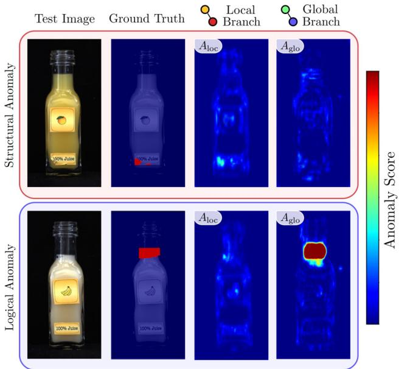
Fig. 6 Visualization of anomaly maps and for a structural and a logical anomaly. The damaged label in the upper row is an example of a structural anomaly. The local branch is able to detect this type of anomaly while the global one does not contribute much information. In the lower row, a wrong fill level constitutes a logical anomaly. The local branch is not able to detect this because no new local structure is present in the image. Since the global branch takes the entire image content into account, it is able to successfully segment the anomalous region
Combination of the Two Branches. We train the whole model end-to-end using the sum of the individual loss terms normalized by the respective depth of the matched features, i.e.,
Due to the joint optimization of and , the global feature encoder is encouraged to learn meaningful descriptors for the training data and simultaneously output a representation that can be easily matched by the feature regression network. Computing residuals in a learned feature space facilitates the accurate matching of higher-dimensional features through a low-dimensional bottleneck.
Scoring Functions for Anomaly Localization. During inference, pixelwise anomaly scores for a test image can be computed by comparing the features of the image encoder networks to the features of the respective regression network, i.e., by computing and , respectively. Here, the norm is taken over the respective feature dimension and . Large regression errors indicate anomalous pixels. is mainly responsible for detecting structural anomalies, while enables the network to detect logical anomalies, as illustrated in Fig. 6. Since the weights of both and are randomly initialized, there exists no training incentive for the two networks to behave differently for structural anomalies. Our experiments show that the global branch is indeed mainly responsible for the detection of logical anomalies, while the local branch performs much better at the detection of structural anomalies.
In order to get an anomaly map for the entire model, we calculate and for all images I in the validation set after training the model. We then compute the respective means, and , and standard deviations, and of all resulting scores. During inference, we normalize the individual anomaly maps and define the combined anomaly map by $\begin{array} { r } { A = \frac { A _ { \mathrm { l o c } } - \mu _ { \mathrm { l o c } } } { \sigma _ { \mathrm { l o c } } } + \frac { A _ { \mathrm { g l o } } - \mu _ { \mathrm { g l o } } } { \sigma _ { \mathrm { g l o } } } } \end{array}$ . Note that the validation set of our dataset only contains anomaly-free images. Here, we use the corresponding anomaly images only to adjust the scale of anomaly scores of the two network branches.
Anomaly Detection on Multiple Scales. The choice of the receptive field for can have a significant impact on the anomaly localization performance, especially when anomalies vary greatly in size. To be less dependent on the particular choice of the receptive field, we train multiple models with varying values of The anomaly maps of the models are combined by computing their pixelwise average. Let be the set of all evaluated receptive fields and be the anomaly map obtained from a model with receptive field . The maps of different receptive fields are combined by computing
5 Experiments on the LOCO Dataset
We benchmarked our GCAD method against recently introduced as well as established methods for anomaly localization on the LOCO AD dataset and the MVTec AD dataset (see Sect. 6). We compared our method against a deterministic autoencoder (AE), a variational autoencoder (VAE), and the memory-guided autoencoder (MNAD). All autoencoders localize anomalies by an of the input with its reconstruction. We further evaluated f-AnoGAN as a representative for GAN-based methods. For methods that leverage features of pretrained networks, we evaluated SPADE as well as the Student–Teacher anomaly detection model. As an additional baseline, we included the Variation Model (Steger et al. 2018, Chapter 3.4.1.4), which computes a mean and a standard deviation for each image pixel and channel and detects anomalies by strong deviations from the calculated pixelwise statistics.
To facilitate the training of data-hungry deep learning models, we designed the acquisition of our dataset in a way that permits an easy augmentation of the images.
5.1 Dataset Augmentation
In our experiments, we used the following image augmentations:
• Vertical flip with probability
Horizontal flip with probability
Random rotation by up to around the center of the image,
Random jitter of brightness, contrast, and saturation of the image.
Not all of these augmentations are suited for every type of object in our dataset. We provide an overview of the augmentations applied to each object in Table 2. The augmented datasets were used for the training of our GCAD method, all three autoencoders, and f-AnoGAN. SPADE, the Student– Teacher model, and the Variation Model did not require augmented data.
5.2 Training and Evaluation Protocols
We begin by giving detailed information on the training and evaluation for each method.
Our Method (GCAD). All input images were zoomed to pixels. For optimization, we used Adam (Kingma and Ba 2015) with an initial learning rate of and a weight decay of . We trained our method on the augmented training images for 500 epochs. outputs feature maps of depth and the capacity of its global context vector was set to . For , we used the same network architecture and training protocol as in (Bergmann et al. 2020). Its feature vectors are of depth We trained our method using two receptive fields of sizes and combined their outputs for multi-scale anomaly detection.
Figure 7 shows the architecture of the global feature encoder . We initialized the five skip weights u, v, w, and with a value of 1 prior to training. Then, we linearly decreased the skip weights after each epoch, starting with the upper levels. After 100 epochs, all skip weights were set to a value of meaning that information could only flow through the g-dimensional bottleneck. We empirically observed that progressively fading out the weights of the skip connections facilitated the optimization, yielding lower values of on the training and validation set.
The -dimensional features output by are transformed into dloc-dimensional features by an upsampling network U. It consists of three convolutions with nonlinearities in between. The output of U is matched with the descriptors given by the pretrained network . Finally, the two regression networks and have an architecture similar to U-Net (Ronneberger et al. 2015). We use a publicly accessible implementation2 with five downsampling blocks, five upsampling blocks, and a bottleneck of size 1024.
Table 2 Overview of the dataset augmentation techniques applied during training to each of the object categories present in our dataset
| Category | Vertical flip | Horizontal flip | Random rotation | Color jitter |
| Breakfast Box | x | x | √ | √ |
| Screw Bag | √ | √ | √ | √ |
| Pushpins | √ | √ | √ | √ |
| Splicing Connectors | √ | √ | √ | √ |
| Juice Bottle | x | x | √ | √ |
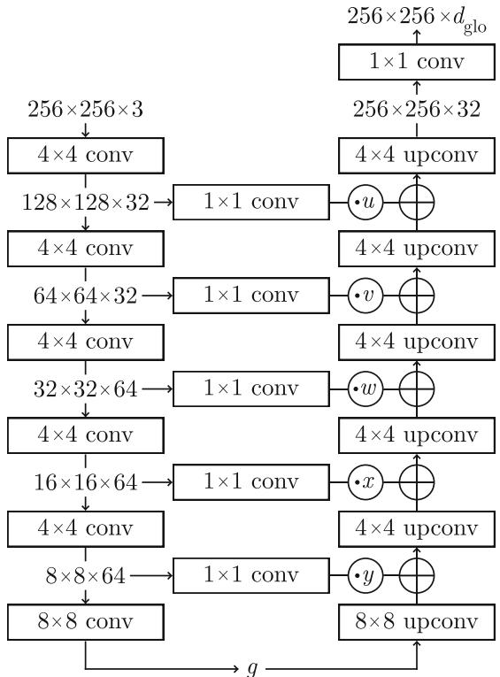
Fig. 7 Architecture of with a g-dimensional bottleneck. Transposed convolutions are denoted by “upconv.” All 4 4 convolutions use a stride of 2 and are followed by a Leaky ReLU activation. The 1 1 convolutions in the skip connections have the same number of feature maps in their output as in their input. Their outputs are scaled by the respective skip weight. Then, they are added element-wise to the output of the corresponding transposed convolution
Prior to training, we normalize the features of the pretrained network . For each of the feature dimensions, we compute the mean and the standard deviation of all descriptors on the training dataset. We then update the weights in the final layer of to output normalized features.
For the first 50 epochs, we only trained the global feature encoder , the upsampling network U, and the local regression network . In the remaining 450 epochs, the global regression network was optimized as well.
Deterministic and Variational Autoencoders. For both autoencoders, we use the same base architecture as for our global feature encoder depicted in Fig. 7. An additional batch normalization layer is inserted after each convolution and transposed convolution layer, respectively, except after the last one. For the VAE, the last convolution layer of the encoder is duplicated to estimate the variance.
We trained for 500 epochs, gradually fading out the skip connections over the first 100 epochs. For optimization, we used Adam with an initial learning rate of , a weight decay of , and a batch size of 16. The latent dimension of the autoencoders was set to . During inference, anomaly scores are derived by a pixelwise comparison of the input images and their reconstructions.
f-AnoGAN. We used the publicly available implementation of the original authors.3 As required by their method, we zoomed all images to size 64 64 pixels and converted them to grayscale prior to training and evaluation.
For the training of the GAN, the dimension of the latent space was set to 128. The optimization was done using Adam with an initial learning rate of , no weight decay, and a batch size of 64. The GAN was trained for 100 epochs. After each training iteration of the generator, the discriminator was trained for 5 iterations.
The training of the encoder network was done with the RMSProp optimizer with an initial learning rate of no weight decay, and a batch size of 64 and runs for iterations. During inference, anomaly scores are derived by a pixelwise comparison between the input and the reconstructed image.
MNAD. We used the publicly available implementation of the original authors4 with a small modification. Instead of predicting a future video frame, we implemented the reconstruction of the original input images. The memory module was initialized with 10 memory items of dimension 512. The output dimension of the image encoder was set to 32. For optimization, we used Adam with an initial learning rate of , no weight decay, and a batch size of 4. The weights for feature compactness and feature separateness were set to . The training was run for 500 epochs in reconstruction mode on images of size pixels.
SPADE. We used our own implementation of the SPADE method. As a feature extractor, we used a Wide ResNet50- 2 pretrained on ImageNet. The images were zoomed to a size of . For feature extraction, we used the last convolution layers of the first, second, and third block of the network. For the image-level nearest-neighbor computation, we used nearest neighbors. On the pixel-level we used κ 1 nearest neighbors. The resulting anomaly maps were smoothed using a Gaussian filter with
Student–Teacher. We used our own implementation of the Student–Teacher method. All images were zoomed to a size of 256 256 pixels prior to training and evaluation. The student networks were trained with 3 different receptive fields of sizes pixels. For each receptive field, we used an ensemble of 3 students, which resulted in a total of 9 trained models per object category. For optimization, we used Adam with an initial learning rate of , weight decay of , and a batch size of 1. As anomaly score, we evaluated the predictive variance of the student networks and their regression errors with respect to the pretrained teacher network.
Variation Model. The Variation Model (Steger et al. 2018, Chapter 3.4.1.4) calculates the mean and standard deviation at each pixel location over the entire training set of each object in our dataset. This works best if the images show aligned objects. In the MVTec LOCO AD dataset, the breakfast boxes are already aligned. We aligned the pushpins and juice bottles using shape-based matching (Steger 2001, 2002). The screw bags and splicing connectors were not transformed at all for our experiments.
The pixels of the anomaly map show the absolute difference of the test image to the mean of the training images in multiples of the standard deviation of the training images. This is done separately for each channel and we obtained the overall anomaly map as the average over all channels. If a spatial transformation is applied during inference, some pixels might not overlap with the mean and deviation images. For such pixels, no meaningful anomaly score can be computed and we therefore set it to the minimum attainable value of 0.
5.3 Experiment Results
To assess the difference in performance between the detection of structural and logical anomalies, we split the test set into two subsets. Each subset exclusively contains defective test images with structural or logical anomalies, respectively. The anomaly-free test images are included in both sets. For each subset, we computed the area under the sPRO curve up to a false positive rate of 0.05. We chose this integration limit because larger false positive rates yield segmentation results that are not meaningful in practical applications. For completeness, we report the values for several integration limits in Table 7. The joint localization performance for both types of anomalies was measured by the average of the two individual areas.
Table 3 shows the results of all evaluated methods on our dataset for each dataset category. Our method consistently outperforms all other evaluated methods for all but one of the dataset categories. We also observe that methods that leverage feature descriptors from pretrained networks, i.e., SPADE and Student–Teacher, outperform the generative methods based on autoencoders or GANs.
Figure 8 displays the performance of the methods when structural or logical anomalies are treated separately. The corresponding numerical values can be found in Table 5. All evaluated methods except ours show a bias towards the detection of one type of anomaly. Our method significantly outperforms all other approaches in the detection of logical anomalies, while maintaining a high performance at the detection of structural anomalies. In particular, our method performs best when considering the average performance for
Table 3 Quantitative results on the MVTec LOCO AD dataset
| Method | Breakfast Box | Screw Bag | Pushpins | Splicing Connectors | Juice Bottle | Mean |
| VM | 0.168 | 0.253 | 0.254 | 0.125 | 0.325 | 0.225 |
| f-AnoGAN | 0.223 | 0.348 | 0.336 | 0.195 | 0.569 | 0.334 |
| MNAD | 0.080 | 0.344 | 0.357 | 0.442 | 0.472 | 0.339 |
| AE | 0.189 | 0.289 | 0.327 | 0.479 | 0.605 | 0.378 |
| VAE | 0.165 | 0.302 | 0.311 | 0.496 | 0.636 | 0.382 |
| SPADE | 0.372 | 0.331 | 0.234 | 0.516 | 0.804 | 0.451 |
| S-T | 0.496 | 0.602 | 0.523 | 0.698 | 0.811 | 0.626 |
| GCAD (Ours) | 0.502 | 0.558 | 0.739 | 0.798 | 0.910 | 0.701 |
The normalized area under the sPRO curve up to an average false positive rate per pixel of 5% is computed separately for the structural and logica anomalies. The table reports the mean of both values. The best-performing method is highlighted in boldface
Structural Anomalies
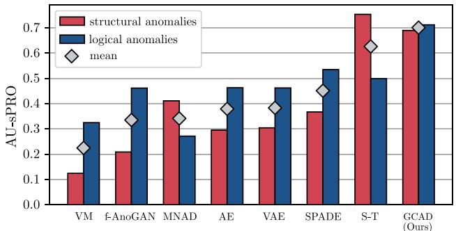
Fig. 8 Difference in anomaly localization performance for both structural and logical anomalies on the MVTec LOCO AD dataset
both anomaly types. Qualitative results of our method for structural and logical anomalies are shown in Fig. 9.
Figure 10 provides additional qualitative results for all evaluated methods. Anomaly images are shown for four test images of our MVTec LOCO AD dataset. Two of them contain structural anomalies, i.e., the flipped splicing connector and the contamination in the juice bottle. The other two contain logical anomalies, i.e., the additional red cable between the two splicing connectors and the banana logo on the bottle filled with orange juice.
Our method performed well for all of the displayed examples. While the Student–Teacher approach detected the structural anomalies reliably, it failed to detect the logical anomalies due to its limited receptive field. The SPADE method, on the other hand, failed to detect the flipped splicing connector, while it managed to localize the remaining three anomalies. The deterministic and the variational autoencoder both yielded large residuals in the parts of the images that are challenging to reconstruct, e.g., on the cables between the two splicing connectors. While the memory module in MNAD reduced the number of false positive predictions and improved upon the basic autoencoders in the detection of structural anomalies, it failed to detect the logical anomalies. Similar to the deterministic and variation autoencoders, f-AnoGAN yielded numerous false positive predictions in areas that are difficult to accurately reconstruct. The Variation Model requires a pixel-precise alignment of the inspected objects. Since this is not possible for the splicing connectors, it did not perform well for this dataset category. For the juice bottle, it managed to detect parts of the structural anomaly.
Input Image
Ground Truth
Anomaly Map
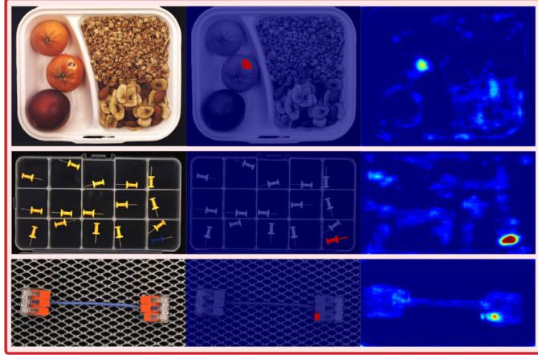
Fig. 9 Qualitative results of our method on the MVTec LOCO AD dataset for both structural and logical anomalies. The damaged tangerine, the blue pushpin, and the broken connector are structural anomalies.
Figure 11 shows some failure cases of our method. Our method might fail when anomalies are very small in size, e.g., for the broken pushpin in the top left compartment. It might also fail to capture very challenging logical constraints, such as enforcing a fixed number of objects that can potentially appear almost anywhere in the input image. The second row of Fig. 11 depicts such an example in which the screw bag contains an additional washer. We show a third failure case of our method in which anomalies manifest themselves in very subtle and intricate differences compared to the anomaly-free images. In the last row of Fig. 11, no almonds are mixed into the banana chips in the bottom right compartment.
5.4 Ablation Studies
To assess the sensitivity ofour method with respect to the chosen hyperparameters, we performed various ablation studies. The results are shown in Fig. 12.
Global Context Dimension. We begin by analyzing the impact of the global context dimension g of the global feature encoder . When the dimension of the latent space was too small, struggled to output meaningful feature
Input Image
Ground Truth
Anomaly Map
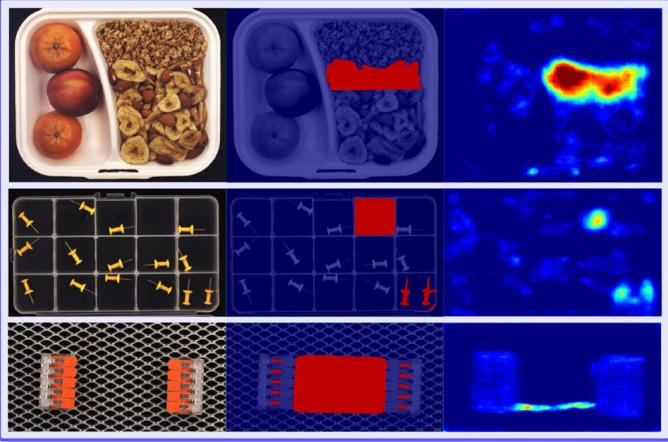
The wrong ratio of cereals and banana chips in the breakfast box, the additional yellow pushpin, and the missing cable between the two connectors constitute logical anomalies
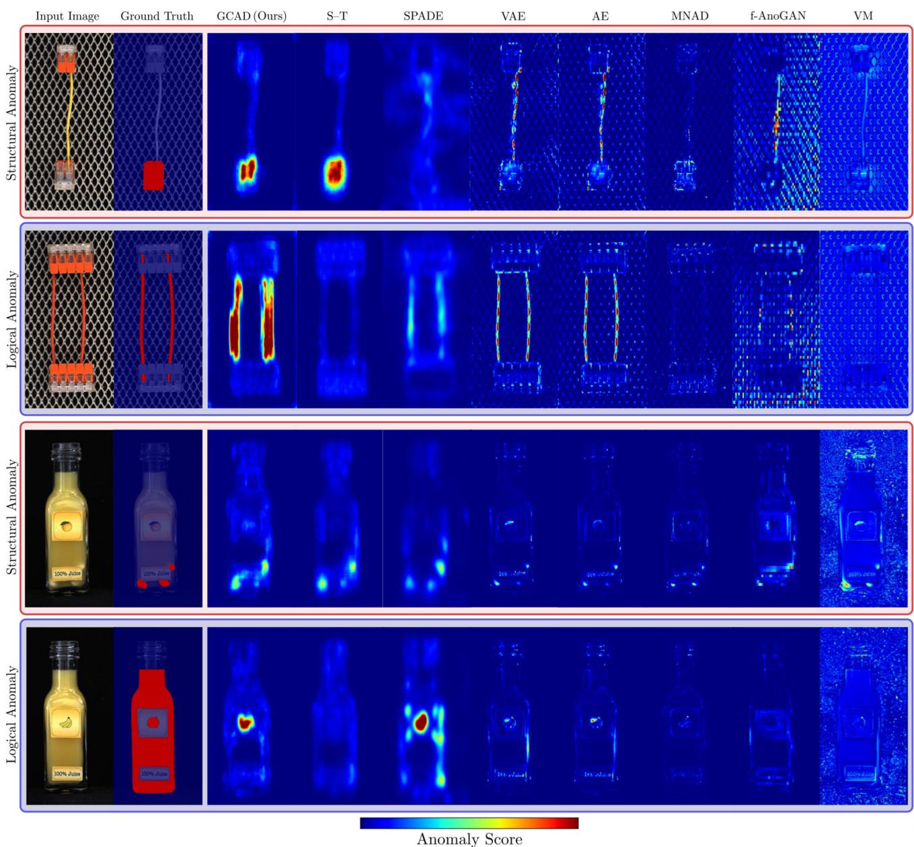
Fig. 10 Qualitative results for each evaluated method on our MVTec LOCO AD dataset. The first and third row contain examples ofstructural anomalies, i.e. the flipped connector and the contamination in the juice
bottle. The second and third row contain examples of logical anomalies, i.e., a second cable being present between the two connectors and the banana label on the bottle filled with orange juice
maps and the anomaly detection performance declined for both types of anomalies. When the global context dimension was increased, the overall detection performance was not affected substantially. However, we observed a slight decline in the detection of logical anomalies, while the localization of structural anomalies improved. The increased capacity led to fewer false positives in the global anomaly detection branch while, at the same time, captured the global context of the data less reliably. This is due to the fact that choosing a latent dimension that is too large allows the global feature encoder to copy parts of its input directly into the latent representation. This phenomenon can also be observed in other bottleneck architectures, such as autoencoders. While the mean performance is slightly better for , the best balance between the detection of structural and logical anomalies is achieved for
Receptive Field. We also assessed the performance of our proposed method with respect to the size of the receptive field of the local feature encoder . Figure 12 shows the difference in performance when evaluating our approach for single receptive fields of sizes 17, 33, and 65, as well as when combining the anomaly images of multiple receptive fields together. Our method yielded a similar mean performance for receptive fields of size 17 and 33, while the performance dropped for very large values of p. When combining multiple receptive fields together, the performance for both structural and logical anomaly detection could be enhanced.
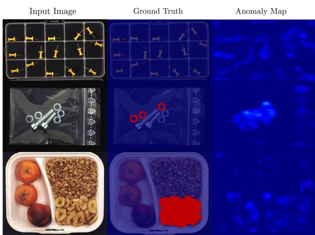
Fig. 11 Qualitative examples for which our GCAD method fails to localize anomalies
Model Branch. Fig. 12 also evaluates the responsibility of the different branches of our method with respect to the anomaly localization performance. We compared the performance of the local anomaly maps to that of the global anomaly maps and saw that, indeed, performed much better in the detection of structural anomalies. While our local branch is similar to the Student–Teacher approach, we do not train a computationally expensive ensemble to additionally evaluate the intrinsic uncertainty of . This comes at a small cost of structural anomaly detection performance. , on the other hand, yielded a better performance on the logical anomalies. Combining and improved the performance for both structural and logical anomalies.
This indicates that some of the logical anomalies are better detected by the local branch and some structural ones by the global branch. We illustrate this in Fig. 13. Certain logical anomalies can be detected by the local branch, e.g., two pushpins being present in a single compartment, since both pushpins fall into the receptive field of the local feature extractor . The global branch also detects this anomaly. However, it also tends to produce more false positive predictions than the local branch since it has to reconstruct the entire input image over a low dimensional bottleneck. In this case, the global branch benefits from the performance of the local branch on this logical anomaly. There also exist cases in which the global branch contributes to a better detection of structural anomalies. In the bottom row of Fig. 13, a piece of a tangerine is present as a contamination in the breakfast box. Since the texture of the contamination matches that of a tangerine, the local branch does not detect this anomaly. The global branch, however, analyzes the entire image context and can encode that there are already two tangerines present in the input image. Therefore, it manages to localize this structural anomaly.
Feature Regression vs. Reconstruction. Next, we compare using for the detection of logical anomalies to simply evaluating the reconstruction error of the global feature encoder with respect to the pretrained features after upsampling. Figure 12 shows that evaluating the reconstruction error performed significantly worse than our feature regression approach. This is because the reconstruction of 128-dimensional pretrained features through a small bottleneck is challenging and leads to many false positives. Our approach circumvents this problem by shifting the feature matching task to a lower-dimensional, learned feature space.
Descriptor Dimension of . We investigate the impact of the output dimension of the global feature encoder on the anomaly detection performance. The plot on the left-hand side of Fig. 14 indicates that our method performed well for various values of and is not highly sensitive to this parameter.
Knowledge Distillation. Finally, we assess the benefit of distilling knowledge of pretrained descriptors into the global branch of our method. For comparison, we distilled knowledge from the original input images by changing to
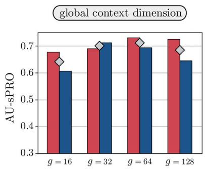
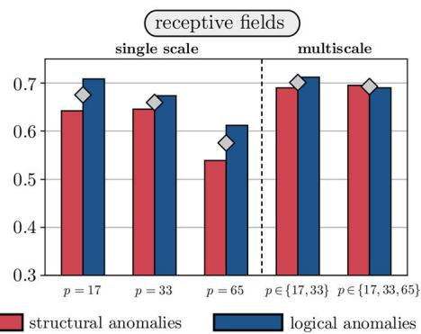
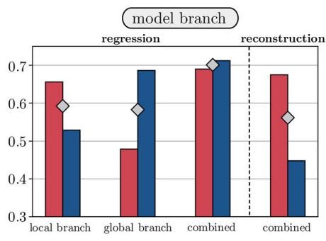
Fig. 12 Performance of our algorithm when varying different hyperparameters during training or evaluation
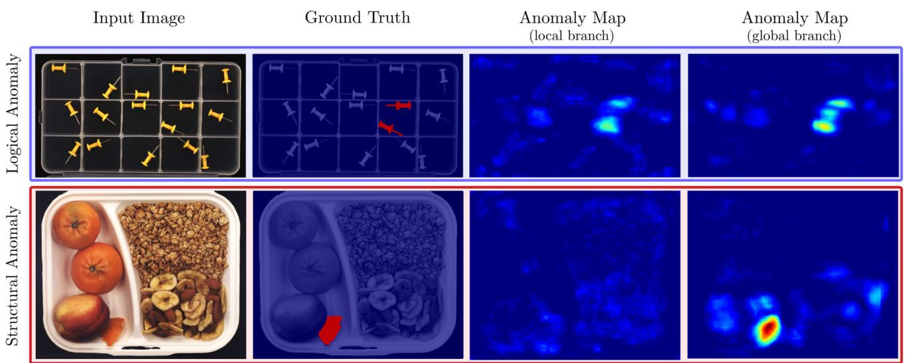
Fig. 13 Qualitative examples for which the local branch works better in the detection of a logical anomaly than the global branch and vice versa. In the top row, the global branch produces more false positive
The plot on the right-hand side of Fig. 14 shows that the distillation of features from pretrained networks into greatly enhanced the anomaly localization performance for both structural and logical anomalies.
Variation of Saturation Thresholds. In this paragraph, we analyze the sensitivity of the sPRO metric with respect to the manually selected saturation thresholds. We evaluated each method in our benchmark ten times with thresholds sampled uniformly from an interval ranging from 0.5 to 1.5 times the original threshold. In case of defects for which the saturation threshold was chosen to be equal to the annotated area, we did not vary the threshold. The ranking of the evaluated methods was stable across all ten runs, with the exception of two runs in which two methods switched between the sixth and seventh rank.
5.5 Image-Level Classification
In addition to deciding whether a certain pixel is anomalous, in practical applications it is also often important to make an image-level binary decision. We derive image-level anomaly scores for each evaluated method by computing the maximum anomaly score over all pixels in a given anomaly map. We then compute the area under the ROC curve for each dataset category, again separating logical and structural anomalies. The top bar chart in Fig. 15 shows our results. Similar to our experiments on anomaly localization, our GCAD method performs significantly better than all other evaluated methods in the detection of logical and the joint detection of structural and logical anomalies. The Student–Teacher method performs best in the detection of structural anomalies, however, its performance on the logical ones is significantly lower. All other methods show a balanced classification performance between logical and structural anomalies. The AU-ROC values depicted in the bar plot can be found in Table 6 in the appendix.
predictions than the local branch in the detection of the two pushpins. In the bottom row, the local branch fails to localize the contamination in the breakfast box
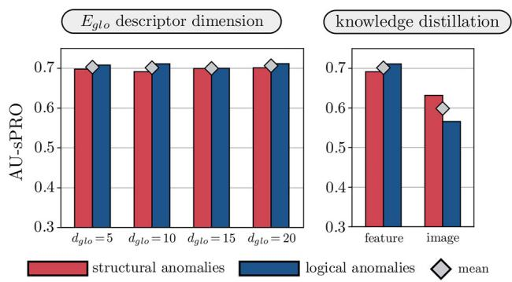
Fig. 14 The left barplot examines the impact of the output dimension of on the anomaly localization performance. The plot on the right shows the difference in performance for different knowledge distillation targets
6 Experiments on the MVTec AD Dataset
In addition to the ones on our MVTec LOCO AD dataset, we performed experiments on MVTec AD. We split all test images of the dataset into two subsets. The first contains only images with defects that match our definition of structural anomalies. The second comprises all images that contain at least one logical anomaly. Of the 1258 anomalous test images, we identified 37 to contain defects that match our definition of logical anomalies. We list them in Table 4. For each of the logical anomalies, the saturation threshold for the sPRO metric was chosen to be the whole area of the ground truth label. We performed a separate evaluation of each method on structural and logical anomalies, respectively. For all methods, we used the same hyperparameters as on the MVTec LOCO AD dataset. The data augmentation strategies for each evaluated object are listed in Appendix C.
MVTec LOCO
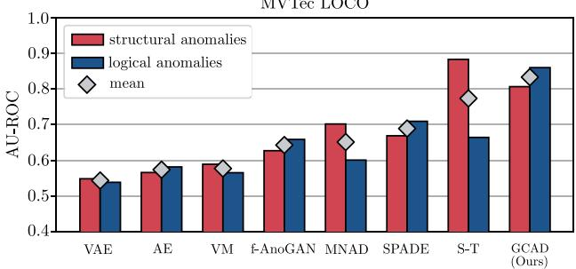
MVTec AD
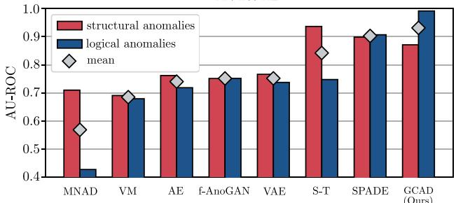
Fig. 15 Image-level classification results on the presented MVTec LOCO dataset (top) and the MVTec AD dataset (bottom)
Table 4 Images of the MVTec AD dataset that match our description of logical anomalies
| Category | Defect Name | # Images | Image IDs |
| Cable | Cable swap | 12 | All images |
| Combined | 3 | {5, 7,9} | |
| Capsule | Faulty imprint | 2 | {4,5} |
| Transistor | Cut lead | 10 | All images |
| Misplaced | 10 | All images |
Figure 16 shows a bar chart of our results. The corresponding numerical values are listed in Table 8. The results are similar to the ones on the MVTec LOCO AD dataset. Our method outperformed all other methods at the combined detection of structural and logical anomalies. The Student– Teacher approach performed slightly better at the detection of structural anomalies. However, its performance dropped significantly for the logical anomalies in the dataset.
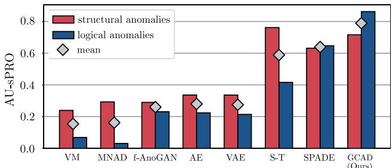
Fig. 16 Difference in anomaly localization performance for both structural and logical anomalies on the MVTec AD dataset
Figure 17 shows qualitative results for all evaluated methods on the object categories transistor and cable. The first and third row contain examples of structural anomalies, i.e., a damaged transistor surface and bent wires in a cable cross section. The other two show examples of logical anomalies. In the second row, the transistor is entirely missing. In the fourth row, the top yellow cable has been replaced by a blue one. Our method reliably detects all four defects. The Student–Teacher model performs well on the structural anomalies but entirely fails to localize the logical anomalies due to its limited receptive field. The SPADE method manages to detect the missing transistor and performs well on the structural anomalies, but has difficulties to localize the more subtle logical anomaly in the image of the cable. All methods based on autoencoders tend to yield increased anomaly scores on the structural anomalies. However, they also produce many false positives in areas that are difficult to accurately reconstruct, i.e., the reflections on the wires of the cable. Both the VAE and the deterministic AE show a tendency to detect both of the logical anomalies. This is not the case for MNAD, for which the high-capacity memory module allows to reconstruct the areas that contain logical anomalies. Similarly to the autoencoders, f-AnoGAN yields many false positives on areas that are challenging to reconstruct. For the missing transistor, however, it manages to capture the logical constraint that a transistor should always be present. The Variation Model manages to detect parts of the damaged transistor as well as its absence. It also yields increased anomaly scores on the bent wires. However, it fails to localize the logical anomaly on the cable.
As for MVTec LOCO, we also compute the AU-ROC values for the image-level classification task on the MVTec AD dataset. The bottom bar chart in Fig. 15 shows our results. While our proposed method performs slightly worse in the detection of structural anomalies than the Student–Teacher method and SPADE, it excels in the classification of the logical anomalies on this dataset. Exact numbers for the AU-ROC values reported in the bar plot can be found in Table 9 in the appendix.
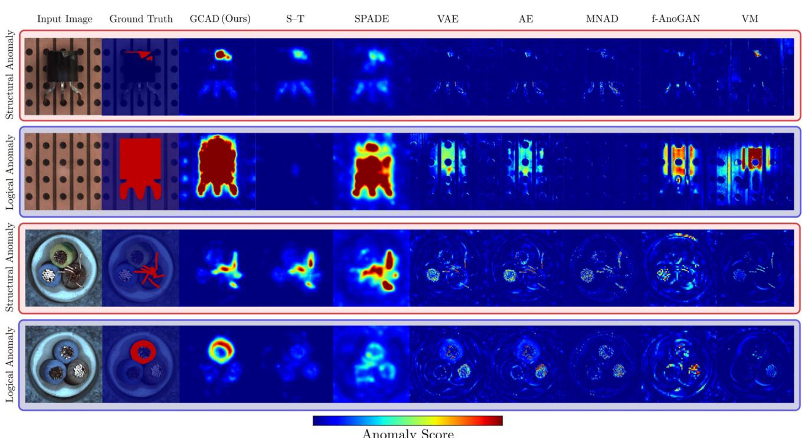
Fig. 17 Qualitative results for each evaluated method on the MVTec AD dataset. The first and third row contain examples of structural anomalies, i.e., the damaged transistor and the bent wires in the cable cross
section. The second and fourth row contain examples of logical anomalies, i.e., the transistor being entirely missing and a blue cable being present instead of a yellow one
7 Conclusions
This paper is based on the observation that anomalies in natural images can manifest themselves in many different ways. We defined two categories of anomalies which we call structural and logical anomalies. Previous work predominantly concentrated on the development of datasets and methods for the detection of structural ones. We therefore created a new dataset for the unsupervised localization of anomalies that focuses on the detection of both structural and logical anomalies. Pixel-precise ground truth annotations are provided for each anomalous test image. Furthermore, we introduced a new performance metric that takes the different modalities of the two anomaly types into account.
In addition, we developed a new method that permits the joint localization of both anomaly types. It consists of two branches, each of which is primarily intended for the detection ofstructural and logical anomalies, respectively. The first is based on an existing method that excels at the localization of structural anomalies. The second learns an embedding of the anomaly-free training data that captures its underlying logical constraints. This is achieved by compressing the input images via a low-dimensional bottleneck.
We performed extensive experiments on our new dataset as well as a suitable subset of the MVTec AD dataset. Our results showed that existing methods tend to be biased towards the detection of one of the two types of anomalies. Our approach performed equally well in the detection of structural and logical anomalies and improved the state of the art in the joint detection of both. Nevertheless, due to the complexity of our new dataset, there is still room for future improvement.
Declarations
Availability of Data and Material The introduced dataset is made publicly available.
Code Availability We make our evaluation code publicly available.
Author Contributions The first author named is lead and corresponding author. All other authors are listed in alphabetical order. We further list individual contributions to the paper. Writing–Original Draft: P.B., K.B., M.F., and D.S. Writing–Review & Editing: P.B., K.B., M.F., D.S, and C.S. Conceptualization: P.B, K.B, M.F., D.S., and C.S. Methodology: P.B., K.B., M.F., and D.S. Investigation and Data Curation (Acquisition and Annotation of the Dataset): P.B., K.B., M.F., and D.S.
Open Access This article is licensed under a Creative Commons Attribution 4.0 International License, which permits use, sharing, adaptation, distribution and reproduction in any medium or format, as long as you give appropriate credit to the original author(s) and the source, provide a link to the Creative Commons licence, and indicate if changes were made. The images or other third party material in this article are included in the article’s Creative Commons licence, unless indicated otherwise in a credit line to the material. If material is not included in the article’s Creative Commons licence and your intended use is not permitted by statutory regulation or exceeds the permitted use, you will need to obtain permission directly from the copyright holder. To view a copy of this licence, visit http://creativecomm ons.org/licenses/by/4.0/.
A Construction of the Black Circle Toy Dataset
We drew inspiration from the homonymous painting by Malevich (1924). All images in the dataset are RGB images of size 256 256 pixels. The anomaly-free images show a single black circle with a radius of 16 pixels at a random location on a bright background. The value of each background pixel of each channel is sampled randomly from the interval 247, 255 . We introduce two types of anomalies, a structural and a logical one. The former is a simple color variation where a randomly selected region within the circle is filled with a randomly selected color. The latter manifests itself by the presence of a second black circle. It is also placed at a random location while ensuring that the two circles do not overlap. All images, anomalous as well as anomaly-free ones, are postprocessed by smoothing them with a Gaussian filter with . For training the Student–Teacher method and the VAE on our toy dataset, we generated 1000 train and 100 validation images. We followed the same training protocol as for our experiments on the MVTec LOCO AD dataset.
B Additional Results on MVTec LOCO AD
Table 5 provides the sPRO values corresponding to the bar chart in Fig. 8 on the MVTec LOCO AD dataset. Table 7 shows the mean performance of each evaluated method on structural and logical anomalies for increasing integration limits for the area under the sPRO curve. We observe seemingly better performances for all methods when increasing the integration threshold. However, as motivated in Bergmann et al. (2021), we discourage an evaluation of our dataset at high false positive rates since those correspond to segmentation results that are no longer meaningful in practice.
Table 5 Additional quantitative results on the LOCO dataset. The normalized area under the sPRO curve up to an average false positive rate per pixel of 5% is computed separately for the structural and logical anomalies. The table additionally reports the mean of both values. The best-performing method is highlighted in boldface
| Method | Structural anomalies | Logical anomalies | Mean |
| VM | 0.124 | 0.325 | 0.225 |
| f-AnoGAN | 0.209 | 0.460 | 0.334 |
| MNAD | 0.412 | 0.266 | 0.339 |
| AE | 0.296 | 0.460 | 0.378 |
| VAE | 0.305 | 0.459 | 0.382 |
| SPADE | 0.368 | 0.536 | 0.451 |
| S-T | 0.756 | 0.497 | 0.626 |
| GCAD (Ours) | 0.692 | 0.711 | 0.701 |
Table 6 AU-ROC values for the image-level classification experiment on the MVTec LOCO dataset. The best-performing method is highlighted in boldface
| Method | Structural Anomalies | Logical Anomalies | Mean |
| VAE | 0.548 | 0.538 | 0.543 |
| AE | 0.565 | 0.581 | 0.573 |
| VM | 0.589 | 0.565 | 0.577 |
| f-AnoGAN | 0.627 | 0.658 | 0.642 |
| MNAD | 0.702 | 0.600 | 0.651 |
| SPADE | 0.668 | 0.709 | 0.689 |
| S-T | 0.883 | 0.664 | 0.773 |
| GCAD (Ours) | 0.806 | 0.860 | 0.833 |
Table 7 We report the area under the sPRO curve for different integration limits L. The best performing method is highlighted in boldface
| Method | |||||
| VM | 0.086 | 0.225 | 0.314 | 0.493 | 0.740 |
| f-AnoGAN | 0.152 | 0.334 | 0.442 | 0.624 | 0.827 |
| MNAD | 0.176 | 0.339 | 0.447 | 0.643 | 0.853 |
| AE | 0.166 | 0.378 | 0.499 | 0.699 | 0.882 |
| VAE | 0.162 | 0.382 | 0.506 | 0.705 | 0.884 |
| SPADE | 0.225 | 0.451 | 0.587 | 0.790 | 0.927 |
| S-T | 0.402 | 0.626 | 0.717 | 0.836 | 0.937 |
| GCAD (Ours) | 0.462 | 0.701 | 0.787 | 0.891 | 0.962 |
C Additional Results on MVTec AD
Table 8 provides the exact sPRO values depicted in the bar plot in Fig. 16 on the MVTec AD dataset. Table 10 provides an overview of the augmentation techniques applied to each dataset category during model training. Note that no augmentation was applied for the training of the Student–Teacher model, SPADE, and the Variation Model.
Table 8 Quantitative results on the MVTec AD dataset. The normalized area under the sPRO curve up to an average false positive rate per pixel of 5% is computed separately for the structural and logical anomalies. The table additionally reports the mean of both values. The best-performing method is highlighted in boldface
| Method | Structural Anomalies | Logical Anomalies | Mean |
| VM | 0.240 | 0.069 | 0.155 |
| MNAD | 0.294 | 0.032 | 0.163 |
| f-AnoGAN | 0.290 | 0.231 | 0.261 |
| AE | 0.337 | 0.224 | 0.281 |
| VAE | 0.336 | 0.215 | 0.276 |
| S-T | 0.762 | 0.417 | 0.590 |
| SPADE | 0.632 | 0.647 | 0.640 |
| GCAD (Ours) | 0.716 | 0.863 | 0.789 |
Table 9 AU-ROC values for the image-level classification experiment on the MVTec AD dataset. The best-performing method is highlighted in boldface
| Method | Structural Anomalies | Logical Anomalies | Mean |
| MNAD | 0.709 | 0.427 | 0.568 |
| VM | 0.690 | 0.679 | 0.684 |
| AE | 0.761 | 0.718 | 0.740 |
| f-AnoGAN | 0.751 | 0.751 | 0.751 |
| VAE | 0.766 | 0.737 | 0.751 |
| S-T | 0.936 | 0.747 | 0.842 |
| SPADE | 0.898 | 0.906 | 0.902 |
| GCAD (Ours) | 0.871 | 0.991 | 0.931 |
Table 10 Overview of the dataset augmentation techniques applied during training to each of the object categories present in the MVTec AD dataset
| Category Vertical flip | Horizontal flip Random rotation Color jitter |
| Bottle √ | √ √ √ |
| Cable x | x √ √ |
| Capsule x | x √ √ |
| Carpet √ | √ √ √ |
| Grid √ | √ √ √ |
| Hazelnut √ | √ √ √ |
| Leather √ | √ √ √ |
| Metal Nut x | x √ √ |
| Pill x | x √ √ |
| Screw √ | √ √ √ |
| Tile √ | √ √ √ |
| Toothbrush X | √ √ √ |
| Transistor X | √ √ √ |
| Wood √ | √ √ √ |
| Zipper √ √ | √ √ |
D Overview of the Anomalies Present in the MVTec LOCO AD Dataset
Tables 11, 12, 13, 14, 15 provide an overview over all anomalies for each object category in the MVTec LOCO AD dataset. For each kind of anomaly, the tables include the classification as a structural or logical anomaly, the pixel value in the corresponding ground truth image (GT), as well as the saturation threshold for the sPRO metric. For some anomalies, the saturation threshold is expressed as an absolute value in pixels. In this case, the value of in Eq. 1 is set to . For the other anomalies, the saturation threshold is expressed as a relative threshold and . A relative threshold of 1 indicates that the whole area of the ground truth region is taken as the saturation threshold. In particular, this is the case for all structural anomalies in our dataset.
Table 11 Overview over all anomalies of category breakfast box in our MVTec LOCO AD dataset
| Anomaly Name | Type | GT | Srel | |
| Missing_almonds | Logical | 255 | 1 | |
| Missing_bananas | Logical | 254 | 1 | |
| Missing_toppings | Logical | 253 | 1 | |
| Missing_cereals | Logical | 252 | 1 | |
| Missing_cereals_and_toppings | Logical | 251 | 1 | |
| 2_nectarines_1_tangerine | Logical | 250 | 100100 | |
| 1_nectarine_1_tangerine | Logical | 249 | 84300 | |
| 0_nectarines_2_tangerines | Logical | 248 | 100100 | |
| 0_nectarines_3_tangerines | Logical | 247 | 100100 | |
| 3_nectarines_0_tangerines | Logical | 246 | 200200 | |
| 0_nectarines_1_tangerine | Logical | 245 | 184400 | |
| 0_nectarines_0_tangerines | Logical | 244 | 268700 | |
| 0_nectarines_4_tangerines | Logical | 243 | 168600 | |
| Compartments_swapped | Logical | 242 | 1 | |
| Overflow | Logical | 241 | 1 | |
| Underflow | Logical | 240 | 1 | |
| Wrong_ratio | Logical | 239 | 1 | |
| Mixed_cereals | Structural | 238 | 1 | |
| Fruit_damaged | Structural | 237 | 1 | |
| Box_damaged | Structural | 236 | 1 | |
| Toppings_crushed | Structural | 235 | 1 | |
| Contamination | Structural | 234 | 1 |
Table 12 Overview over all anomalies of category screw bag in our MVTec LOCO AD dataset
| Anomaly Name | Type | GT | ||
| Screw_too_long | Logical | 255 | 9000 | |
| Screw_too_short | Logical | 254 | 9000 | |
| 1_very_short_screw | Logical | 253 | 1 | |
| 2_very_short_screws | Logical | 252 | 18000 | |
| 1_additional_long_screw | Logical | 251 | 29600 | |
| 1_additional_short_screw | Logical | 250 | 20600 | |
| 1_additional_nut | Logical | 249 | 7500 | |
| 2_additional_nuts | Logical | 248 | 15000 | |
| 1_additional_washer | Logical | 247 | 5500 | |
| 2_additional_washers | Logical | 246 | 11000 | |
| 1_missing_long_screw | Logical | 245 | 29600 | |
| 1_missing_short_screw | Logical | 244 | 20600 | |
| 1_missing_nut | Logical | 243 | 7500 | |
| 2_missing_nuts | Logical | 242 | 15000 | |
| 1_missing_washer | Logical | 241 | 5500 | |
| 2_missing_washers | Logical | 240 | 11000 | |
| Bag_broken | Structural | 239 | 1 | |
| Color | Structural | 238 | 1 | |
| Contamination | Structural | 237 | 1 | |
| Part_broken | Structural | 236 | 1 |
Table 13 Overview over all anomalies of category pushpins in our MVTec LOCO AD dataset
| Anomaly Name | Type | GT | ||
| 1_additional_pushpin | Logical | 255 | 6300 | |
| 2_additional_pushpins | Logical | 254 | 12600 | |
| Missing_pushpin | Logical | 253 | 6300 | |
| Missing_separator | Logical | 252 | 1 | |
| Front_bent | Structural | 251 | 1 | |
| Broken | Structural | 250 | 1 | |
| Color | Structural | 249 | 1 | |
| Contamination | Structural | 248 | 1 |
Table 14 Overview over all anomalies of category splicing connectors in our MVTec LOCO AD dataset
| Anomaly Name | Type | GT | ||
| Wrong_connector_type_5_2 | Logical | 255 | 67100 | |
| Wrong_connector_type_5_3 | Logical | 254 | 44300 | |
| Wrong_connector_type_3_2 | Logical | 253 | 22100 | |
| Cable_too_short_T2 | Logical | 252 | 53300 | |
| Cable_too_short_T3 | Logical | 251 | 76100 | |
| Cable_too_short_T5 | Logical | 250 | 120000 | |
| Missing_connector | Logical | 249 | 1 | |
| Missing_connector_and_cable | Logical 1 | 248 | 103600 | |
| Missing_cable | Logical | 247 | 18000 | |
| Extra_cable | Logical | 246 | 0.5 | |
| Cable_color | Logical | 245 | 18000 | |
| Broken_cable | Structural | 244 | 1 | |
| Cable_cut | Logical | 243 | 1 | |
| Cable_not_plugged | Structural | 242 | 1 | |
| Unknown_cable_color | Structural | 241 | 1 | |
| Wrong_cable_location | Logical | 240 | 18000 | |
| Flipped_connector | Structural | 239 | 1 | |
| Broken_connector | Structural | 238 | 1 | |
| Open_lever | Structural | 237 | 1 | |
| Color | Structural | 236 | 1 | |
| Contamination | Structural | 235 | 1 |
Table 15 Overview over all anomalies of category juice bottle in our MVTec LOCO AD dataset
| Anomaly Name | Type | GT | Srel | |
| Missing_top_label | Logical | 255 | 70400 | |
| Missing_bottom_label | Logical | 254 | 32700 | |
| Swapped_labels | Logical | 253 | 140800 | |
| Damaged_label | Structural | 252 | 1 | |
| Rotated_label | Structural | 251 | 1 | |
| Misplaced_label_top | Logical 1 | 250 | 70400 | |
| Misplaced_label_bottom | Logical | 249 | 32700 | |
| Label_text_incomplete | Structural | 248 | 1 | |
| Empty_bottle | Logical | 247 | 1 | |
| Wrong_fill_level_too_much | Logical | 246 | 1 | |
| Wrong_fill_level_not_enough | Logical | 245 | 1 | |
| Misplaced_fruit_icon | Logical | 244 | 1 | |
| Missing_fruit_icon | Logical | 243 | 1 | |
| Unknown_fruit_icon | Structural | 242 | 1 | |
| Incomplete_fruit_icon | Structural | 241 | 1 | |
| Wrong_juice_type | Logical | 240 | 4500 | |
| Juice_color | Structural | 239 | 1 | |
| Contamination | Structural | 238 | 1 |
References
An, J., & Cho, S. (2015). Variational autoencoder based anomaly detection using reconstruction probability. Special Lecture on IE, 2(1), 1–18.
Bailer, C., Habtegebrial, T.A., Varanasi, K., & Stricker, D. (2017). Fast Dense Feature Extraction with CNNs that have Pooling or Striding Layers. In British Machine Vision Conference (BMVC).
Baur, C., Wiestler, B., Albarqouni, S., & Navab, N. (2019). Deep Autoencoding Models for Unsupervised Anomaly Segmentation in Brain MR Images. In A. Crimi, S. Bakas, H. Kuijf, F. Keyvan, M. Reyes, & T. van Walsum (Eds.), Brainlesion: Glioma (pp. 161–169). Multiple Sclerosis, Stroke and Traumatic Brain Injuries: Springer International Publishing.
Bergmann, P., Fauser, M., Sattlegger, D., & Steger, C. (2019). MVTec AD — A Comprehensive Real-World Dataset for Unsupervised Anomaly Detection. In IEEE Conference on Computer Vision and Pattern Recognition (CVPR), pp 9592–9600.
Bergmann, P., Löwe, S., Fauser, M., Sattlegger, D., & Steger, C. (2019). Improving unsupervised defect segmentation by applying structural similarity to autoencoders. In: Tremeau A, Farinella G, Braz J (eds) 14th International Joint Conference on Computer Vision, Imaging and Computer Graphics Theory and Applications, Scitepress, Setúbal, vol 5: VISAPP, pp 372–380.
Bergmann, P., Fauser, M., Sattlegger, D., & Steger, C. (2020). Uninformed students: Student–teacher anomaly detection with discriminative latent embeddings. In 2020 IEEE/CVF Conference on Computer Vision and Pattern Recognition (CVPR), pp 4182–4191.
Bergmann, P., Batzner, K., Fauser, M., Sattlegger, D., & Steger, C. (2021). The MVTec anomaly detection dataset: A comprehensive real-world dataset for unsupervised anomaly detection. International Journal ofComputer Vision, 129, 1038–1059.
Blum, H., Sarlin, P.E., Nieto, J., Siegwart, R., & Cadena, C. (2019). Fishyscapes: A benchmark for safe semantic segmentation in
autonomous driving. In 2019 IEEE/CVF International Conference on Computer Vision Workshop (ICCVW), pp 2403–2412.
Burlina, P., Joshi, N., & Wang, I.J. (2019). Where’s Wally Now? Deep generative and discriminative embeddings for novelty detection. In IEEE Conference on Computer Vision and Pattern Recognition (CVPR).
Carrera, D., Manganini, F., Boracchi, G., & Lanzarone, E. (2017). Defect detection in SEM images of nanofibrous materials. IEEE Transactions on Industrial Informatics, 13(2), 551–561.
Cohen, N., Hoshen, Y. (2020). Sub-image anomaly detection with deep pyramid correspondences. arXiv:200502357v1
Cordts, M., Omran, M., Ramos, S., Rehfeld, T., Enzweiler, M., Benenson, R., Franke, U., Roth, S., & Schiele, B. (2016). The Cityscapes Dataset for Semantic Urban Scene Understanding. In Proc. ofthe IEEE Conference on Computer Vision and Pattern Recognition (CVPR), pp 3213–3223.
Ehret, T., Davy, A., Morel, J. M., & Delbracio, M. (2019). Image anomalies: A review and synthesis of detection methods. Journal ofMathematical Imaging and Vision, 61(5), 710–743.
Goodfellow, I., Pouget-Abadie, J., Mirza, M., Xu, B., Warde-Farley, D., Ozair, S., Courville, A., & Bengio, Y. (2014). Generative Adversarial Nets. In Advances in Neural Information Processing Systems, pp 2672–2680.
Gulrajani, I., Ahmed, F., Arjovsky, M., Dumoulin, V., & Courville, A.C. (2017). Improved training of wasserstein gans. In: Guyon I, Luxburg UV, Bengio S, Wallach H, Fergus R, Vishwanathan S, Garnett R (eds) Advances in Neural Information Processing Systems, Curran Associates, Inc., vol 30.
He, K., Zhang, X., Ren, S., & Sun, J. (2016). Deep Residual Learning for Image Recognition. In IEEE Conference on Computer Vision and Pattern Recognition, pp 770–778, 10.1109/CVPR.2016.90.
Huang, Y., Qiu, C., Guo, Y., Wang, X., & Yuan, K. (2018). Surface Defect Saliency of Magnetic Tile. In 2018 IEEE 14th International Conference on Automation Science and Engineering (CASE), pp 612–617.
Kingma, D.P., Ba, J. (2015). Adam: A method for stochastic optimization. In 3rd International Conference on Learning Representations (ICLR).
Krizhevsky, A., Sutskever, I., & Hinton, G.E. (2012). ImageNet Classification with Deep Convolutional Neural Networks. In Proceedings ofthe 25th International Conference on Neural Information Processing Systems - 1, pp 1097–1105.
Lin, T. Y., Maire, M., Belongie, S., Hays, J., Perona, P., Ramanan, D., Dollár, P., & Zitnick, C. L. (2014). Microsoft COCO: Common objects in context. In D. Fleet, T. Pajdla, B. Schiele, & T. Tuytelaars (Eds.), Computer Vision - ECCV 2014 (pp. 740–755). Cham: Springer International Publishing.
Lis, K., Nakka, K.K., Fua, P., & Salzmann, M. (2019). Detecting the unexpected via image resynthesis. 2019 IEEE/CVF International Conference on Computer Vision (ICCV), pp 2152–2161.
Liu, W., Li, R., Zheng, M., Karanam, S., Wu, Z., Bhanu, B., Radke, R.J., & Camps, O. (2020). Towards visually explaining variational autoencoders. In Proceedings of the IEEE/CVF Conference on Computer Vision and Pattern Recognition (CVPR).
Mackowiak, R., Lenz, P., Ghori, O., Diego, F., Lange, O., & Rother, C. (2018). CEREALS — cost-effective region-based active learning for semantic segmentation. In textitBritish Machine Vision Conference (BMVC) 2018, BMVA Press, 121.
Malevich, K. (1924). Black circle. Russian Museum, St: Petersburg, Russia, oil on canvas.
Napoletano, P., Piccoli, F., & Schettini, R. (2018). Anomaly detection in nanofibrous materials by CNN-based self-similarity. Sensors, 18(1), 209.
Pang, G., Shen, C., Cao, L., van den Hengel, A. (2020). Deep learning for anomaly detection: A review. arXiv:2007.02500
Park, H., Noh, J., Ham, B.(2020). Learning memory-guided normality for anomaly detection. In Proceedings of the IEEE/CVF Conference on Computer Vision and Pattern Recognition (CVPR).
Ronneberger, O., Fischer, P., & Brox, T. (2015). U-net: Convolutional networks for biomedical image segmentation. In N. Navab, J. Hornegger, W. M. Wells, & A. F. Frangi (Eds.), Medical Image Computing and Computer-Assisted Intervention - MICCAI 2015 (pp. 234–241). Cham: Springer International Publishing.
Schlegl, T., Seeböck, P., Waldstein, S.M., Schmidt-Erfurth, U., & Langs, G. (2017). Unsupervised anomaly detection with generative adversarial networks to guide marker discovery. In International conference on information processing in medical imaging, Springer, pp 146–157.
Schlegl, T., Seeböck, P., Waldstein, S., Langs, G., & Schmidt-Erfurth, U. (2019). f-AnoGAN: Fast unsupervised anomaly detection with generative adversarial networks. Medical Image Analysis, 54, 30– 44.
Song, K., & Yan, Y. (2013). A noise robust method based on completed local binary patterns for hot-rolled steel strip surface defects. Applied Surface Science, 285, 858–864.
Steger, C. (2001). Similarity Measures for Occlusion, Clutter, and Illumination Invariant Object Recognition. In: Radig B, Florczyk S (eds) Pattern Recognition, Springer-Verlag, Berlin, Lecture Notes in Computer Science, 2191, pp 148–154.
Steger, C. (2002). Occlusion, clutter, and illumination invariant object recognition. International Archives ofPhotogrammetry and Remote Sensing, vol XXXIV, part, 3A, 345–350.
Steger, C., Ulrich, M., & Wiedemann, C. (2018). Machine Vision Algorithms and Applications (2nd ed.). Wiley-VCH.
Vasilev, A., Golkov, V., Meissner, M., Lipp, I., Sgarlata, E., Tomassini, V., Jones, D., & Cremers, D. (2019). q-space novelty detection with variational autoencoders. MICCAI 2019 International Workshop on Computational Diffusion MRI.
Yoo, D., Kweon, I.S. (2019). Learning loss for active learning. In Proceedings of the IEEE/CVF Conference on Computer Vision and Pattern Recognition (CVPR).
Zhou, K., Xiao, Y., Yang, J., Cheng, J., Liu, W., Luo, W., Gu, Z., Liu, J., & Gao, S. (2020). Encoding structure-texture relation with pnet for anomaly detection in retinal images. In Computer Vision – ECCV 2020, Springer International Publishing, pp 360–377.
Publisher’s Note Springer Nature remains neutral with regard to jurisdictional claims in published maps and institutional affiliations.
md/2022_Beyond_Dents_and_Scratches__Logical_Constraints_in_Unsup.md 预渲染生成（OCR 语料，插图取自原文）。
公式以 MathML 呈现，浏览器原生渲染，不依赖外部脚本或字体 CDN。